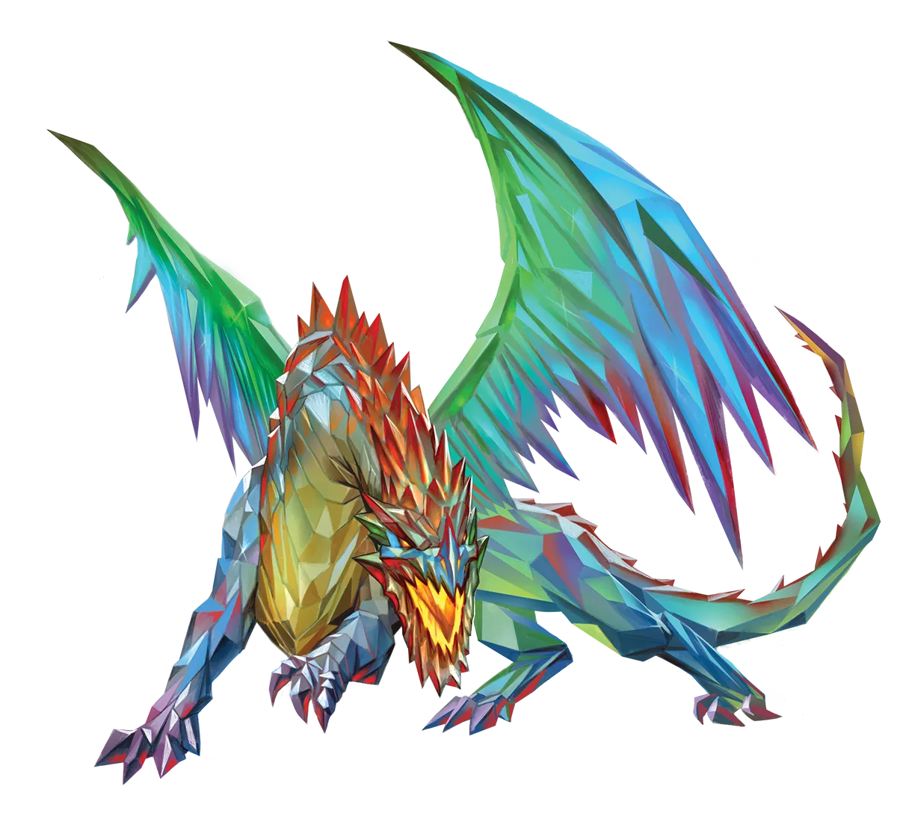
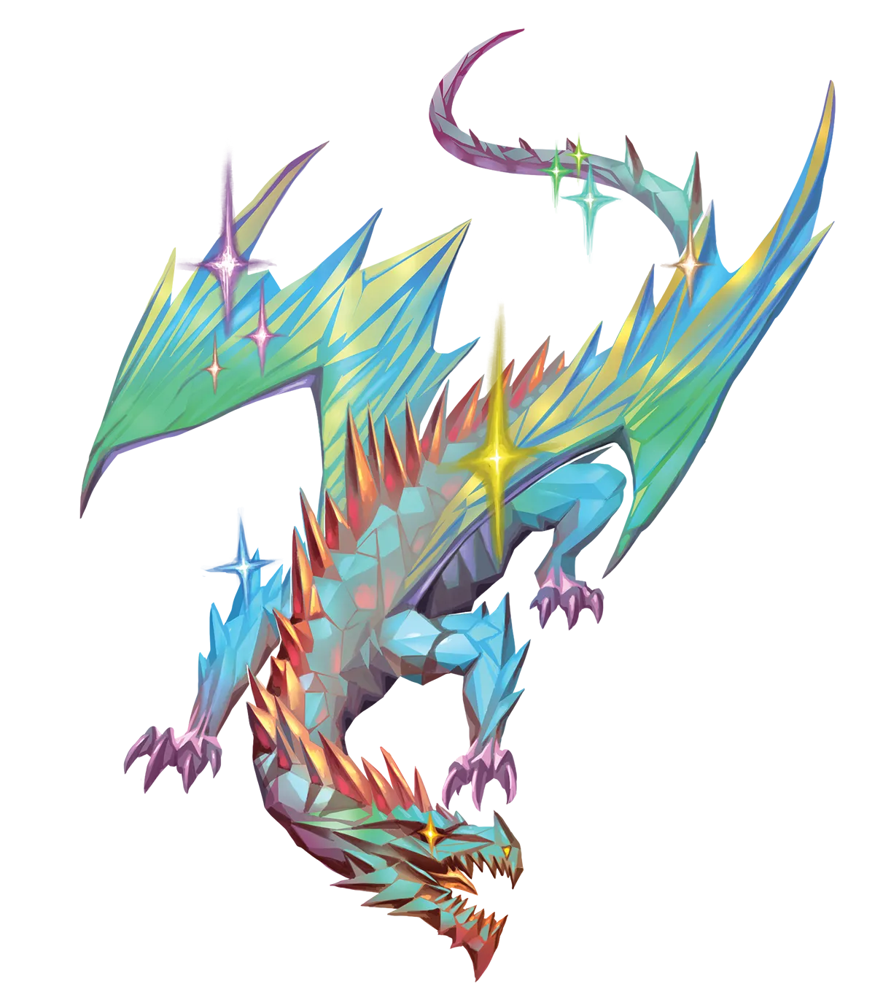

水晶龙艺术
并非每头水晶龙都有创作艺术的天赋，但几乎所有的水晶龙都是美术的狂热爱好者。这导致水晶龙的宝库往往强烈倾向于收藏艺术作品，无论是绘画、雕塑、挂毯、精美珠宝，还是任何其他形式的视觉艺术。水晶龙特别喜欢用水晶制作的艺术品，以及具有反光表面的艺术品，以便它们能欣赏自己的容貌。这真是虚荣的极致啊。唯一比水晶龙更虚荣的生物，是那些需要证明自己能力的家伙。因此，如果你不想卷入某种琐碎的水晶龙发脾气，最好不要侮辱水晶龙宝库中的艺术品，尤其是它们的外表。
水晶龙 Crystal Dragon |
|
|
水晶龙极度自负且易怒，因此，尽管大多数传统主义水晶龙心地善良，它们也极有可能与永恒水晶龙陷入史诗般的争执。永恒之光仪式的结果，加上魔法流动的异变，对水晶龙的身体结构产生了可见的影响。这导致了怨恨，因为水晶龙的外表是它们引以为傲的主要资本，但同时也是它们最大的情感弱点。再加上它们往往在无意中看出侮辱的倾向，你便有了酿成灾难的配方。可悲的是，陷入这一循环的水晶龙并无意与彼此对抗和升级冲突；这不过是它们的天性。即便没有直接的恶意或偏见，冲突的不断升级也可能导致永恒水晶龙与昔日的朋友和家人断绝关系。 永恒水晶龙很快就能结交新朋友，以弥补过去破裂的羁绊，它们尤其喜欢与那些对它们赞不绝口的其他冒险者合作。它们喜欢被精致美好之物环绕，也更偏爱在华丽或美丽的环境中冒险，而不是在阴郁的沼泽里弄得满身泥泞。永恒水晶龙对物质之美的热爱并不妨碍它们选择同伴，因为它们能在所有外表、形状和体态中发现美。它们也不会嫉妒他人的外貌；他人的美丽不会减损水晶龙自身的美丽。这使得水晶龙与各种族的盟友合作，对同为永光龙类的同伴并无特别偏好。然而，有些其他龙类，比如以嘲讽侮辱为乐的黑龙，与永恒水晶龙特别不搭。 尽管它们通常能在任何时刻与冒险队伍中的每位成员相处得非常融洽，但水晶龙从无害的言语或行为中读出侮辱的能力，可能会在队伍中引发紧张。当水晶龙对一句无心的评论感到不悦时，可能会让其他冒险者手忙脚乱地试图解释或弥补。幸运的是，只要给予时间冷静下来，水晶龙很可能会原谅并忘记。然而，如果它们的冒险同伴不愿或无法做到同样的事，麻烦就会出现。 永恒水晶龙容易分心，最适合在受控环境中处理持续的任务。然而，正是这些使他们容易分心的特质，也让它们在复杂、快节奏的情境中必要时擅长多任务处理。它们对闪亮之物和赞美的热爱意味着永恒水晶龙往往会成为游荡者，或像诗人、术士这样基于魅力的角色。 水晶龙艺术 并非每头水晶龙都有创作艺术的天赋，但几乎所有的水晶龙都是美术的狂热爱好者。这导致水晶龙的宝库往往强烈倾向于收藏艺术作品，无论是绘画、雕塑、挂毯、精美珠宝，还是任何其他形式的视觉艺术。水晶龙特别喜欢用水晶制作的艺术品，以及具有反光表面的艺术品，以便它们能欣赏自己的容貌。这真是虚荣的极致啊。唯一比水晶龙更虚荣的生物，是那些需要证明自己能力的家伙。因此，如果你不想卷入某种琐碎的水晶龙发脾气，最好不要侮辱水晶龙宝库中的艺术品，尤其是它们的外表。 水晶龙特质 Crystal Dragon Traits 你出身于一脉来自土元素位面、爱美虚荣却心地善良的水晶龙世系。 |
  |